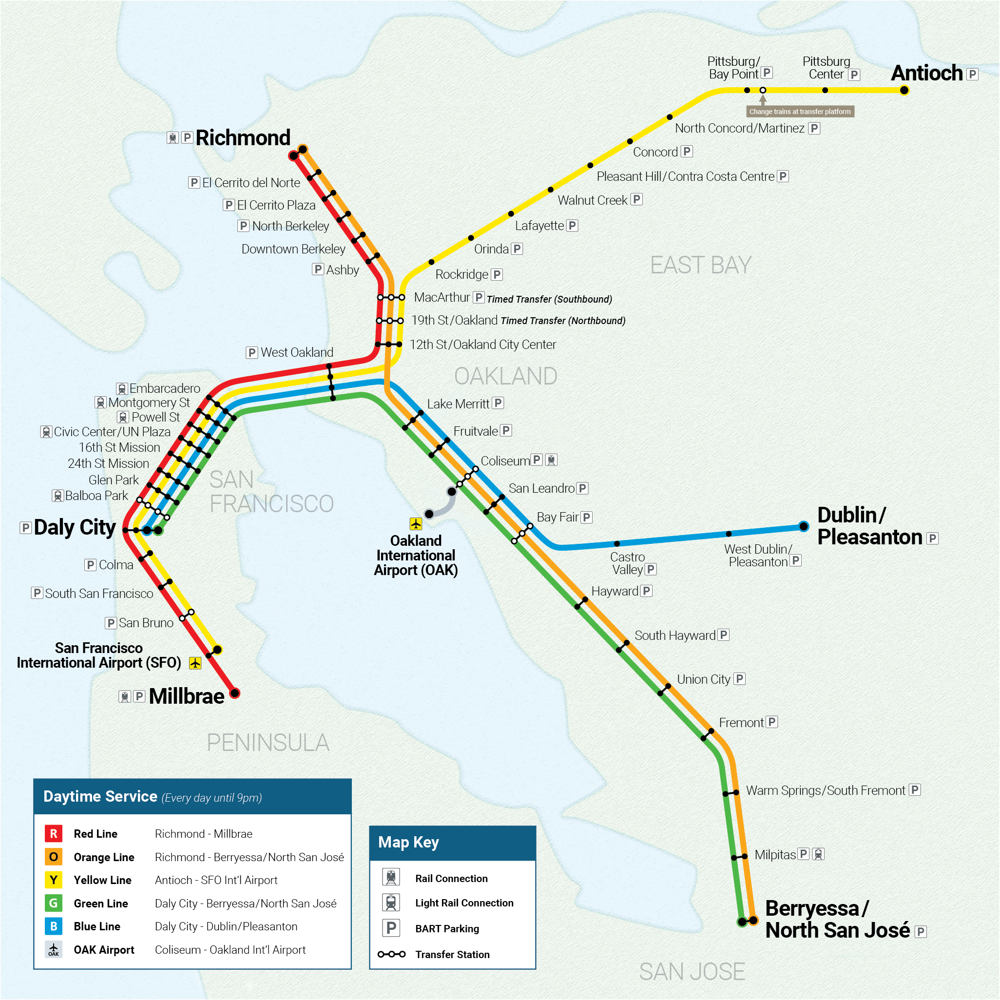
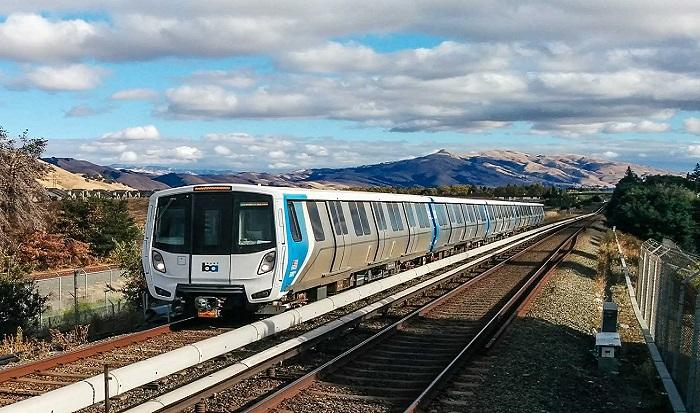

Welcome to BartNET — your community-driven portal for everything related to BART.
Our goal is to make it easier for riders to stay informed and travel smarter. We provide quick access to BART schedules, real-time departure updates, fare information, and helpful resources all in one place. Whether you're a daily commuter or an occasional rider, BartNET is designed to simplify your transit experience.
The Bay Area Rapid Transit (BART) system is a public transportation network serving the San Francisco Bay Area in California. It provides rapid transit services to millions of passengers each year, connecting various cities and neighborhoods across the region. BART operates a network of trains that run on dedicated tracks, offering a convenient and efficient way for commuters and travelers to navigate the Bay Area.

